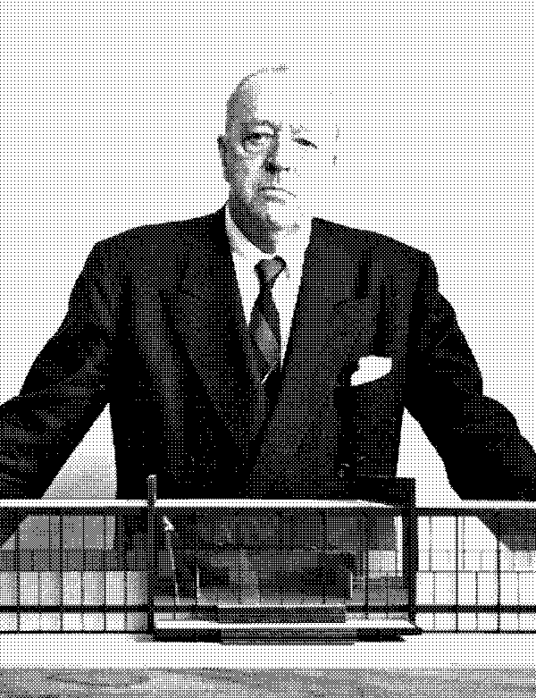

Ludwig Mies van der Rohe
"Less is more."
Mies spent his career proving that stripping away decoration doesn't make a design "empty"—it makes it clearer. By focusing on essential materials and open space, his work reveals the true character of a project.
Design for the Web: Clarity over Decoration
In modern web development, this means removing every border, shadow, and icon that isn't helping the user complete their task. Typography and whitespace are used to guide the eye.
This content block uses nothing but whitespace and a single vertical rule to establish its presence. No shadow, no card, no ornament—just the text and the space around it.
<div class="content-block">
<p>Pure content. No noise.</p>
</div>